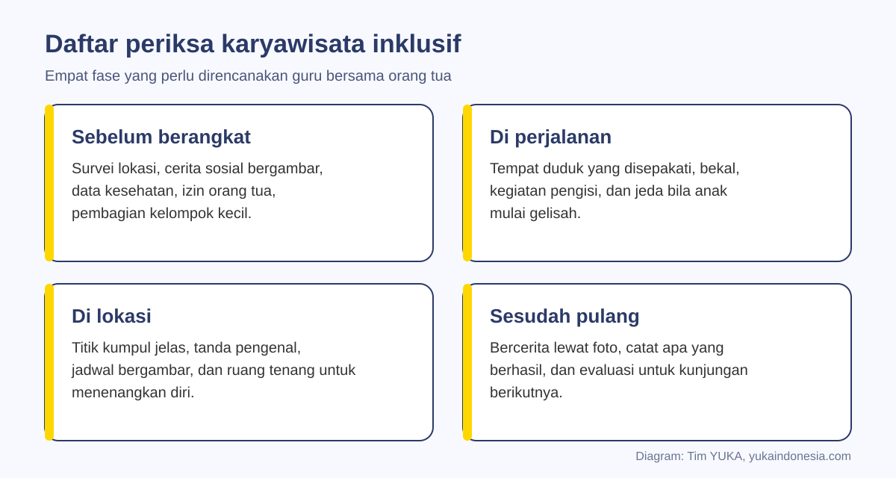
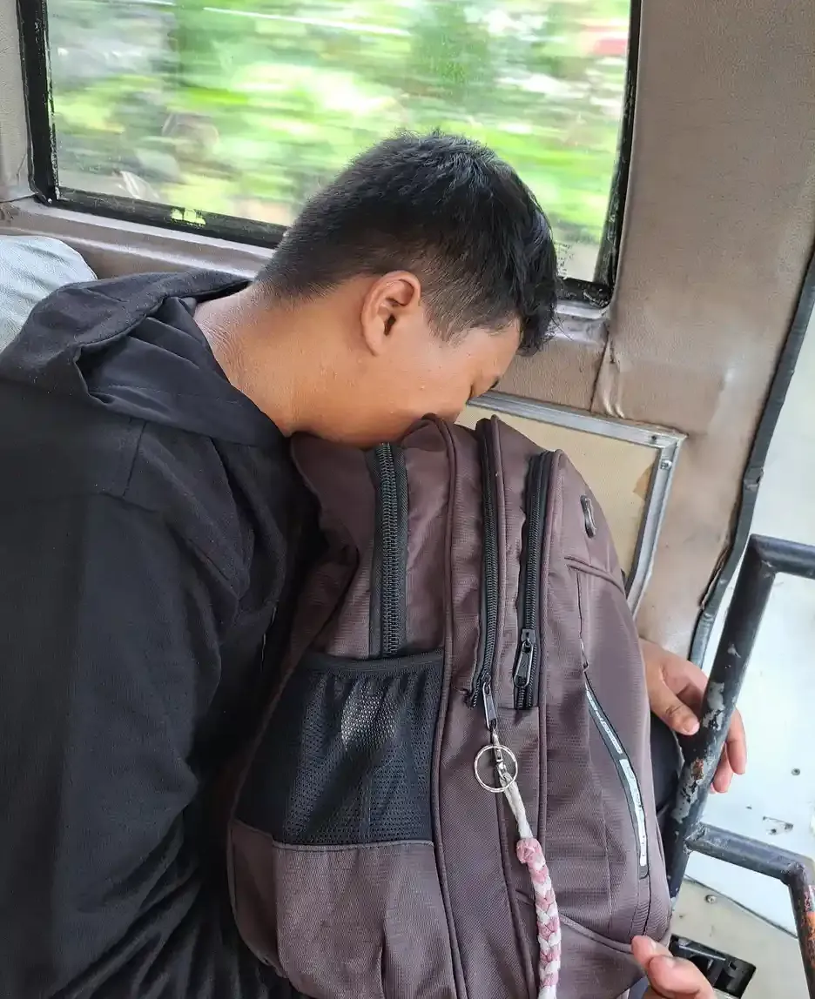
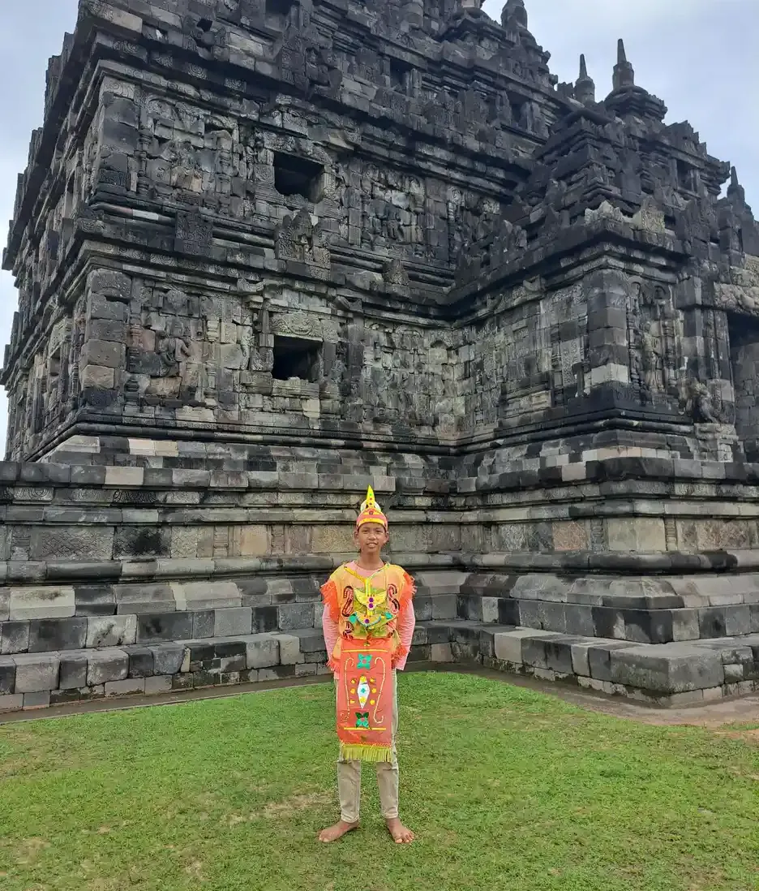

Karyawisata untuk anak berkebutuhan khusus perlu direncanakan dalam empat fase: sebelum berangkat, di perjalanan, di lokasi, dan sesudah pulang. Kuncinya survei lokasi, persiapan anak dengan cerita bergambar, pendamping yang cukup, ruang tenang, dan rencana darurat. Dengan persiapan itu, semua siswa bisa ikut belajar di luar kelas.
Karyawisata sering menjadi kenangan sekolah yang paling diingat anak. Namun bagi anak berkebutuhan khusus (ABK), hari yang menyenangkan bagi teman-temannya bisa terasa melelahkan: perjalanan panjang, tempat asing, suara ramai, dan jadwal yang berubah-ubah. Akibatnya, tidak sedikit orang tua memilih anaknya tidak ikut, dan anak kehilangan pengalaman belajar yang berharga.
Panduan ini membantu guru dan orang tua merencanakan karyawisata yang inklusif, sehingga semua siswa bisa ikut dengan aman. Pembahasannya melengkapi konsep pendidikan inklusi: dari memilih lokasi, menyiapkan anak, membagi pendamping, mengelola kebutuhan sensorik, menyiapkan rencana darurat, sampai mengevaluasi kegiatan sesudahnya.
Penting sebelum membaca
Setiap anak punya kebutuhan berbeda. Gunakan panduan ini sebagai kerangka, lalu sesuaikan bersama orang tua, guru pembimbing khusus, dan terapis yang mengenal anak. Kondisi kesehatan khusus perlu rencana tertulis dari dokter.
Daftar Isi
Mengapa Karyawisata Penting bagi Anak Berkebutuhan Khusus
Belajar di luar kelas memberi pengalaman nyata yang sulit digantikan buku. Anak melihat langsung benda yang selama ini hanya ada di gambar, berlatih antre, membayar, bertanya kepada petugas, dan menyesuaikan diri dengan tempat baru. Bagi anak ABK, kesempatan ini juga menjadi latihan keterampilan hidup di lingkungan yang sesungguhnya.
Karyawisata juga memperkuat hubungan sosial. Perjalanan bersama, makan bekal bersama, dan berfoto bersama membuat anak merasa menjadi bagian dari kelompok. Program teman sebaya seperti buddy system untuk anak ABK di sekolah bisa diperluas ke kegiatan ini.
Dari sisi hak, UU Nomor 8 Tahun 2016 Pasal 18 menyebut hak penyandang disabilitas mendapatkan aksesibilitas untuk memanfaatkan fasilitas publik dan mendapatkan akomodasi yang layak. Di lingkungan sekolah, Permendikbudristek Nomor 48 Tahun 2023 mengatur akomodasi yang layak bagi peserta didik penyandang disabilitas. Menyesuaikan kegiatan agar anak bisa ikut adalah wujud nyata akomodasi tersebut. Ringkasan hak anak ada di artikel apa saja hak anak berkebutuhan khusus.
Memilih Lokasi dan Melakukan Survei
Lokasi yang baik untuk karyawisata inklusif bukan selalu yang paling terkenal, melainkan yang paling bisa diakses dan dikelola. Sebelum menetapkan tujuan, guru sebaiknya datang lebih dulu atau setidaknya menghubungi pengelola. Gunakan daftar berikut saat survei:
| Aspek | Yang diperiksa | Mengapa penting |
|---|---|---|
| Akses fisik | Tangga, jalur landai, lift, jarak parkir ke pintu masuk, permukaan jalan | Anak dengan kursi roda atau mudah lelah butuh rute yang bisa dilalui |
| Toilet | Jumlah, kebersihan, toilet yang bisa dipakai bersama pendamping | Kebutuhan toilet sering menjadi sumber stres terbesar |
| Suasana | Tingkat keramaian, suara keras, lampu berkedip, pengeras suara | Anak yang peka sensorik bisa kewalahan |
| Ruang tenang | Sudut teduh, ruang kosong, atau bangku jauh dari keramaian | Tempat anak menenangkan diri tanpa harus pulang |
| Keamanan | Jalan raya, kolam, tebing, pintu keluar yang terbuka | Mencegah anak terpisah atau celaka |
| Durasi | Waktu tempuh dan lama kunjungan yang realistis | Kelelahan memicu perilaku sulit |
Saat survei, ambil foto pintu masuk, toilet, titik kumpul, dan tempat makan. Foto-foto ini nanti dipakai untuk menyiapkan anak sebelum berangkat. Tanyakan juga kepada pengelola jam yang biasanya sepi; datang di jam sepi sering kali jauh lebih nyaman bagi anak yang peka keramaian.
Menyiapkan Anak Sebelum Berangkat
Banyak anak ABK, terutama anak autis, merasa lebih tenang bila tahu apa yang akan terjadi. Persiapan bisa dimulai beberapa hari sebelumnya:
- Cerita bergambar. Susun cerita pendek berisi foto lokasi: naik bus, tiba di museum, melihat koleksi, makan bekal, pulang. Riset tentang Social Stories menunjukkan hasilnya bervariasi; meta-analisis Kokina dan Kern (2010) menilai efektivitas keseluruhannya rendah sampai dipertanyakan, tetapi lebih baik untuk mengurangi perilaku yang tidak sesuai daripada mengajarkan keterampilan sosial (Kokina dan Kern, 2010). Gunakan sebagai alat bantu persiapan, bukan satu-satunya strategi.
- Video singkat. Rekaman pendek lokasi atau perjalanan membantu anak mengenali tempat. Video modeling terbukti cukup efektif untuk mengajarkan keterampilan hidup fungsional pada individu autis, walaupun studi khusus untuk kegiatan di masyarakat masih terbatas (Hong dkk., 2016).
- Jadwal bergambar. Urutan kegiatan hari itu dalam bentuk gambar, seperti jadwal visual untuk anak autis, dibawa dan dicentang selama kunjungan.
- Latihan kecil. Latih antre, memakai toilet umum, atau memakai penutup telinga di kegiatan sekolah sebelumnya.
Sampaikan juga kemungkinan perubahan, misalnya "kalau hujan, kita makan di dalam". Anak yang sudah diberi tahu bahwa rencana bisa berubah biasanya lebih siap menghadapi perubahan sungguhan.
Pembagian Pendamping dan Kelompok Kecil
Jumlah pendamping adalah faktor keamanan terpenting. Tidak ada rasio baku yang berlaku untuk semua, karena kebutuhan setiap anak berbeda. Prinsipnya, anak yang mudah pergi tanpa pamit, butuh bantuan mobilitas, atau sering mengalami krisis perilaku perlu pendamping khusus satu lawan satu, sementara anak lain bisa bergabung dalam kelompok kecil dengan satu pendamping.
Libatkan semua orang dewasa yang biasa mendampingi anak: shadow teacher, guru pembimbing khusus, dan relawan orang tua. Setiap pendamping perlu tahu:
- Nama dan wajah anak yang menjadi tanggung jawabnya, serta nomor telepon orang tuanya.
- Tanda awal anak mulai kewalahan dan cara menenangkannya.
- Kebutuhan kesehatan khusus, seperti alergi, obat, atau rencana penanganan kejang.
- Cara komunikasi anak, termasuk kartu gambar atau aplikasi AAC.
Bentuk kelompok kecil yang campuran, sehingga anak ABK berjalan bersama teman sekelasnya, bukan dipisahkan dalam satu rombongan khusus. Pengelompokan seperti ini sejalan dengan prinsip pengelolaan kelas inklusi.

Selama Perjalanan
Perjalanan sering kali menjadi bagian tersulit. Tetapkan tempat duduk sebelumnya, misalnya anak yang mudah mabuk perjalanan duduk di depan dan anak yang peka suara duduk jauh dari pengeras suara. Siapkan tas kecil berisi bekal, air minum, kantong plastik, tisu basah, baju ganti, dan benda yang menenangkan anak.
Untuk perjalanan lebih dari satu jam, rencanakan jeda di tempat istirahat. Kegiatan pengisi seperti buku bergambar atau permainan tebak benda di jalan membantu waktu terasa lebih singkat. Bila sekolah sudah melatih kemandirian bepergian, karyawisata bisa menjadi kesempatan mempraktikkan langkah-langkah dalam artikel melatih anak ABK naik transportasi umum secara aman dalam rombongan.
Hitung jumlah siswa setiap kali naik dan turun kendaraan. Kebiasaan sederhana ini mencegah anak tertinggal, terutama di tempat istirahat yang ramai.

Di Lokasi: Titik Kumpul, Kegiatan, dan Ruang Tenang
Begitu tiba, ulangi aturan sederhana: siapa pendamping masing-masing, di mana titik kumpul, dan apa yang dilakukan bila terpisah. Tunjukkan titik kumpul secara langsung, jangan hanya disebutkan. Tanda pengenal berisi nama sekolah dan nomor pendamping yang bisa dihubungi dipakai setiap anak.
Agar anak terlibat, beri peran yang jelas: memotret benda tertentu, mencari tiga hewan di diorama, mencatat warna, atau ikut menari dalam kegiatan budaya. Anak yang punya tugas cenderung lebih fokus daripada anak yang hanya diminta "lihat-lihat". Pendekatan ini sejalan dengan strategi mengajar anak autis di kelas, hanya saja kelasnya berpindah ke tempat kunjungan.
Sepakati tempat tenang sejak awal. Bila anak mulai menunjukkan tanda kewalahan, seperti menutup telinga, berlari, atau menangis, pendamping membawanya ke tempat itu sebelum menjadi krisis. Panduan cara mengatasi tantrum anak autis membantu pendamping merespons dengan tenang. Mengakhiri kunjungan lebih awal bagi satu anak bukan kegagalan, melainkan keputusan yang menjaga anak.

Rencana Darurat yang Wajib Disiapkan
Rencana darurat ditulis, dibagikan ke semua pendamping, dan dibawa dalam bentuk cetak. Isinya mencakup situasi berikut:
| Situasi | Langkah yang disepakati |
|---|---|
| Anak terpisah dari rombongan | Satu pendamping tetap di titik kumpul, yang lain mencari di area yang disukai anak, segera lapor ke petugas lokasi, hubungi orang tua |
| Krisis perilaku | Bawa ke tempat tenang, kurangi bicara dan rangsangan, pendamping lain menjaga kelompok |
| Masalah kesehatan | Ikuti rencana medis tertulis, ketahui fasilitas kesehatan terdekat, simpan obat di tas pendamping |
| Cuaca buruk | Pindahkan kegiatan ke dalam ruangan atau persingkat kunjungan |
| Anak ingin pulang lebih awal | Siapkan kesepakatan dengan orang tua tentang penjemputan |
Pastikan izin tertulis orang tua memuat informasi kesehatan terbaru dan nomor yang bisa dihubungi sepanjang hari. Orang tua yang ingin ikut sebagai relawan bisa membantu, selama pembagian tugasnya jelas sejak awal.
Sesudah Pulang: Bercerita dan Evaluasi
Belajar tidak berhenti saat bus tiba di sekolah. Keesokan harinya, ajak anak bercerita memakai foto kunjungan. Anak yang belum lancar bicara bisa menempelkan foto dan menunjuk bagian yang disukai. Kegiatan ini melatih bahasa, ingatan, dan rasa bangga atas pengalaman yang sudah dilalui. Hasil karya bisa dipajang sebagai bagian dari kegiatan seni dan kreativitas.
Guru dan pendamping kemudian mengevaluasi: apa yang berjalan baik, kapan anak mulai lelah, bagian mana yang memicu kewalahan, dan apa yang perlu diubah. Catatan ini berguna untuk karyawisata berikutnya dan bisa dimasukkan ke dalam program pembelajaran individual anak, misalnya target antre atau memakai toilet umum.
Bagikan juga hasilnya kepada orang tua. Cerita bahwa anak berhasil mengikuti seluruh kegiatan, atau berhasil menenangkan diri di tempat tenang, adalah kabar berharga yang memperkuat kerja sama sekolah dan keluarga. Peran keluarga dalam kerja sama ini dibahas di peran orang tua dalam pendidikan inklusi.
Kesalahan yang Sering Terjadi
- Jadwal terlalu padat. Tiga lokasi dalam satu hari mungkin seru bagi sebagian siswa, tetapi melelahkan bagi banyak anak. Satu atau dua lokasi dengan waktu cukup biasanya lebih berhasil.
- Menyarankan anak tidak ikut. Sebelum memutuskan anak tidak ikut, cari dulu penyesuaian yang memungkinkan ia ikut, misalnya durasi lebih pendek atau pendamping khusus.
- Persiapan hanya untuk guru. Anak dan orang tua juga perlu disiapkan, bukan hanya rundown panitia.
- Tidak ada tempat tenang. Tanpa tempat menenangkan diri, kewalahan kecil mudah berubah menjadi krisis.
- Pendamping tanpa pembekalan. Relawan yang tidak tahu kebutuhan anak bisa salah merespons di saat genting.
Dengan perencanaan yang matang, karyawisata menjadi ruang belajar yang setara bagi semua siswa. Hari itu tidak harus sempurna; cukup aman, bermakna, dan membuat anak ingin ikut lagi.
Pendampingan di YUKA
Siswa Sekolah Inklusi Taruna Imani rutin belajar di luar kelas, dari kunjungan museum sampai kegiatan budaya di kompleks candi, didampingi guru dan pendamping. Sekolah atau orang tua yang ingin bertukar pengalaman merencanakan kegiatan luar kelas yang inklusif dapat menghubungi tim YUKA lewat WhatsApp.
Pertanyaan yang Sering Diajukan
Bagaimana cara merencanakan karyawisata untuk anak berkebutuhan khusus?
Rencanakan dalam empat fase: sebelum berangkat (survei lokasi, cerita bergambar, izin dan data kesehatan), di perjalanan (tempat duduk, bekal, jeda), di lokasi (titik kumpul, peran anak, ruang tenang), dan sesudah pulang (bercerita dan evaluasi).
Apakah anak autis boleh ikut karyawisata sekolah?
Boleh dan sebaiknya diupayakan. Dengan persiapan seperti cerita bergambar, jadwal visual, pendamping yang mengenal anak, dan tempat tenang di lokasi, banyak anak autis dapat mengikuti karyawisata dengan nyaman.
Berapa jumlah pendamping yang ideal saat karyawisata?
Tidak ada rasio baku untuk semua. Anak yang mudah pergi tanpa pamit, butuh bantuan mobilitas, atau sering mengalami krisis perilaku sebaiknya didampingi satu lawan satu, sedangkan anak lain bisa bergabung dalam kelompok kecil dengan satu pendamping.
Apa itu cerita sosial dan apakah efektif?
Cerita sosial adalah cerita pendek bergambar yang menjelaskan situasi yang akan dihadapi anak. Meta-analisis Kokina dan Kern (2010) menemukan hasilnya bervariasi dan lebih baik untuk mengurangi perilaku yang tidak sesuai, sehingga sebaiknya dipakai bersama strategi persiapan lain.
Lokasi seperti apa yang cocok untuk karyawisata inklusif?
Lokasi dengan akses fisik yang baik, toilet memadai, suasana tidak terlalu bising, ada ruang tenang, aman dari bahaya seperti jalan raya atau kolam, dan waktu tempuh yang realistis. Survei lebih dulu sebelum menetapkan.
Apa yang harus dilakukan jika anak terpisah dari rombongan?
Satu pendamping tetap di titik kumpul, pendamping lain mencari di area yang disukai anak, segera lapor ke petugas lokasi, dan hubungi orang tua. Tanda pengenal berisi nama sekolah dan nomor pendamping sangat membantu.
Apa saja yang perlu dibawa anak saat karyawisata?
Tanda pengenal, bekal dan air minum, baju ganti, tisu basah, kantong plastik, obat bila ada, jadwal bergambar, alat komunikasi bila dipakai, dan benda yang menenangkan seperti penutup telinga atau mainan kecil.
Bagaimana menindaklanjuti karyawisata di kelas?
Ajak anak bercerita memakai foto kunjungan, buat karya dari pengalaman itu, lalu evaluasi bersama pendamping apa yang berhasil dan apa yang perlu diubah. Target seperti antre atau memakai toilet umum bisa dimasukkan ke program pembelajaran individual.
Bacaan Terkait
Bacaan lanjutan untuk guru dan orang tua:
Sumber dan Referensi
- Kokina A, Kern L. Social Story interventions for students with autism spectrum disorders: a meta-analysis. J Autism Dev Disord, 2010
- Hong ER dkk. The effects of video modeling in teaching functional living skills to persons with ASD: A meta-analysis of single-case studies. Res Dev Disabil, 2016
- Undang-Undang Nomor 8 Tahun 2016 tentang Penyandang Disabilitas (JDIH BPK): Pasal 18
- Permendikbudristek Nomor 48 Tahun 2023 tentang Akomodasi yang Layak untuk Peserta Didik Penyandang Disabilitas (JDIH Kemendikdasmen)
Catatan: Artikel ini bersifat edukasi umum dan bukan pengganti saran psikolog, guru pendidikan khusus, dokter, atau tenaga profesional lain. Sumber diperiksa tim YUKA pada 5 Oktober 2026.